5 Analysis flowcharts
5.1 Exposome analysis
As any user would need to do using the Bioconductor packages (rexposome, omicRexposome and CTDquerier) when performing an analysis using an R script, there is some kind of flow (or pipeline) to follow in order to get to the results, this is also true on rexposomeShiny, even though it’s a seamless and codeless integration of the packages there’s still some need for a flowchart to get the desired results. All the required flowcharts will be detailed with a box flowchart as well as screenshots of exposomeShiny in order to provide extra guidance if needed.
5.1.1 LOD imputation

Input the exposures, description and phenotypes files and load them into the application. On the right of the file browsers, there are four text fields to input the following:
- Column name in the description file that contains the exposures
- Column name in the description file that contains the families
- Column name in the exposures file that contains the id’s
- Column name in the phenotypes file that contains the id’s
If the column names do not match the selected data files a warning error will be prompted to the user to check the inputs.
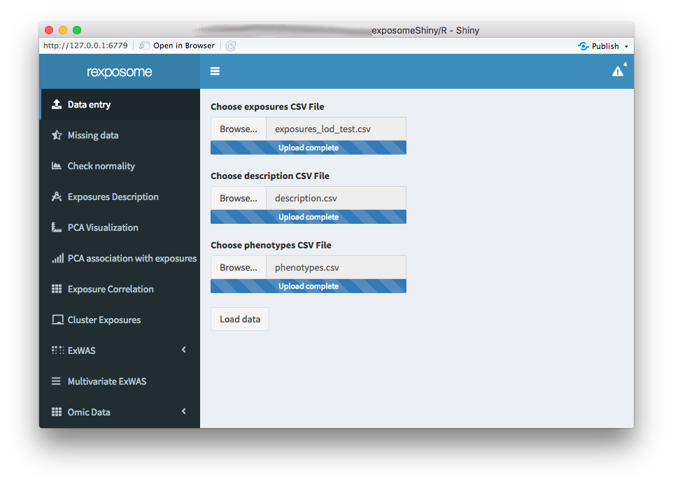 If exposomeShiny detects LODs (limit of detection) on the exposures file (exposures with value: -1), it will prompt the table with the exposures with LOD and double clicking on the desired cell will enable edit mode to input the instrument LOD. There’s also the option of selecting “Random imputation” on the imputation method in order to imputate with random values instead of LOD/sqrt(2).
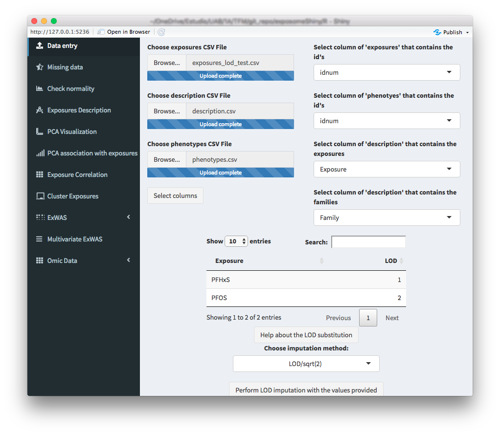
5.1.2 Missing imputation

Once the dataset is loaded into the Shiny, look at the “Missing Data” tab to check the percentages of missing data for each exposure present.

To impute the missing values select “Impute missing values using mice”. After the process finishes, the expect output should be a new missing data graph where there’s no missing of any exposure.
 The new imputed exposures set can be downloaded as a
The new imputed exposures set can be downloaded as a *.csv file, please note that the downloaded file just assigns numbers to the idnum column, if the data you are using has different idnum format it’s needed to format it properly so that it matches the idnum on the phenotypes input file when inputting it to the Shiny.
5.1.3 Normality correction

Once the dataset is loaded into the Shiny, look at the “Check Normality” tab to check which exposures are not normal (Normality = false). By selection from the table the desired exposure and clicking the “Plot histogram of selected exposure”, as the label of the button implies, a histogram of the selected exposure from the table can be seen.
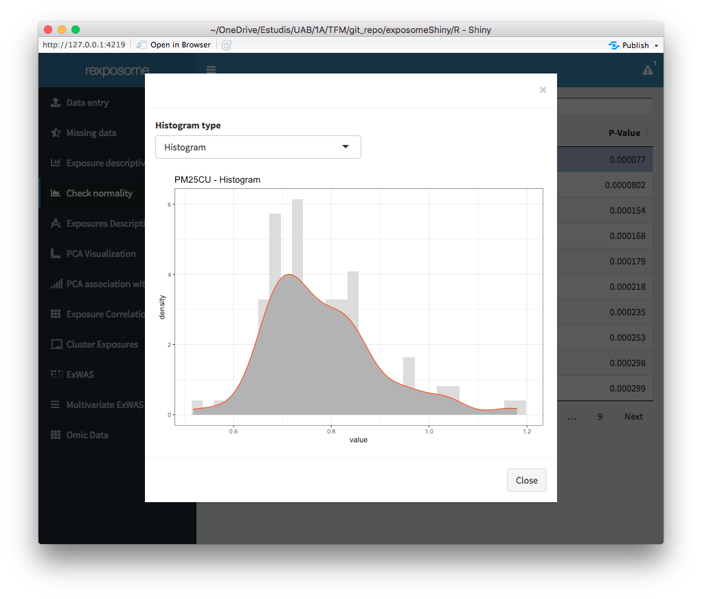
By clicking the “Show false” button, all the non normal exposures are listed with the method that will be applied to normalize, this table can be edited (the “Normalization method” column) by double clicking on the desired row. There are three possible methods to use, “log” (default), “^1/3” and “sqrt”. If no method is desired to be applied to an exposure input “none”.
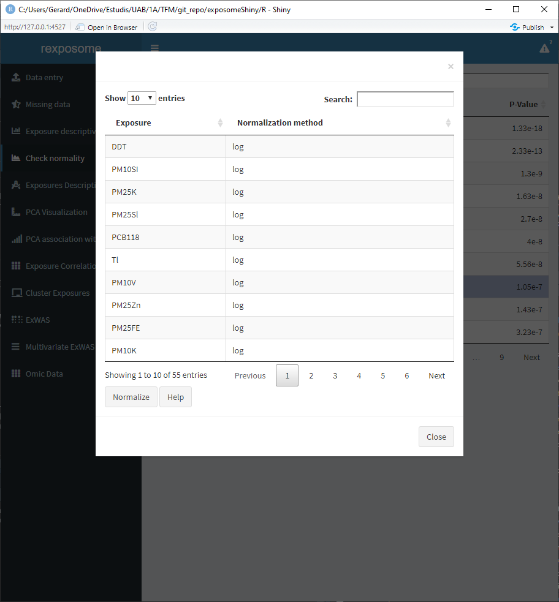
Click “Normalize” and the normalization method selected will be applied, the table on the “Check Normality” tab will be updated with the results of the normalization.
5.1.4 Exposures description

To see all the insights of the exposures dataset loaded into the Shiny, once loaded it check the exposures description tab, there are three options to dig into the dataset, the family (family of the exposure) to visualize and two grouping factors (phenotypes).
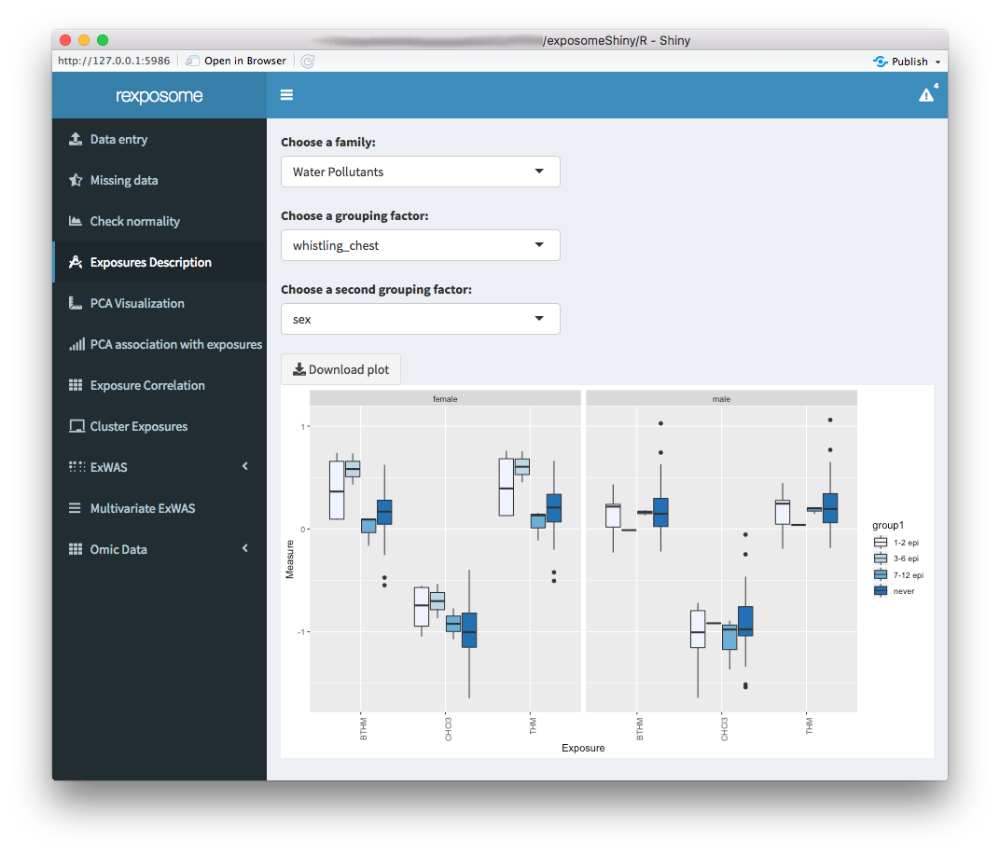
5.1.5 PCA Analysis

To see the results of a PCA (principal component analysis) study, load the data and check the PCA Visualization tab, there a set and grouping factor can be choose, it’s important noting (as it’s already stated on the Shiny) that the grouping parameter only works when the set is selected to “samples”.

If the association of the PCA analysis with the exposures is desired to visualize, check the “PCA association with exposures” tab, there are two grouping methods to visualize, the phenotypes to principal components and the exposures to principal components.
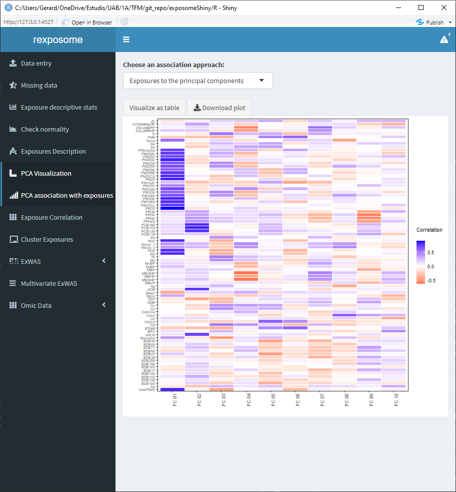
5.1.6 Clusterization and correlation of exposures
To see the results of the exposure correlation and clustering, select the corresponding tab to each analysis. For the exposure correlation analysis there are two visualizations, the matrix representation and the circos.
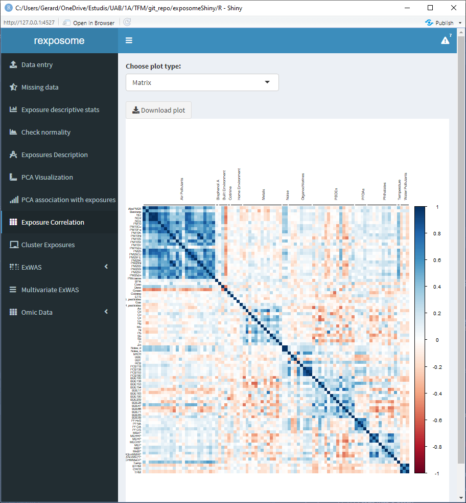
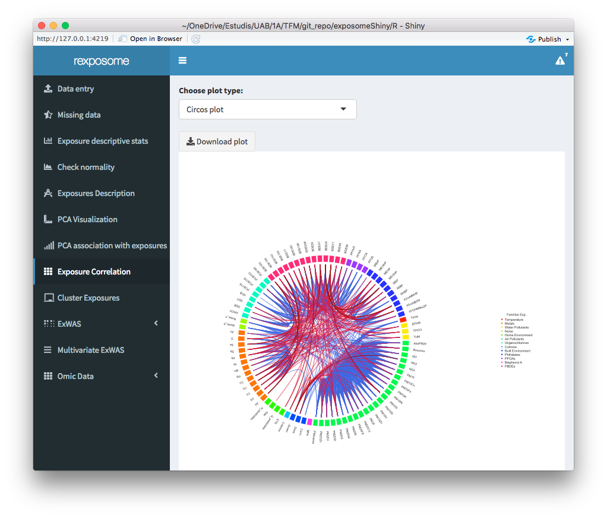
5.1.7 ExWAS

To perform an ExWAS (exposome-wide association) study, check the ExWAS tab and select the addecuate parameters for the ExWAS plot, there are two different plot representations, the output variable to choose (phenotype), the output family and as many covariables (phenotypes) as the user wants. There are internal checks to advise the user on which parameters to select depending if the selected outcome is numerical or bionomial.
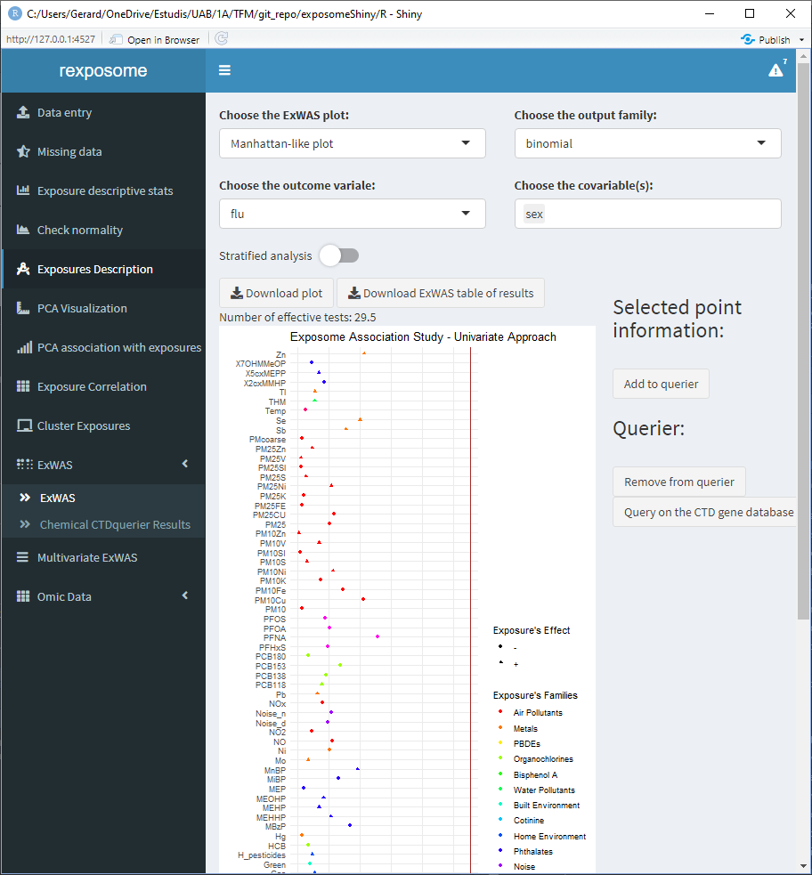
5.1.8 ExWAS - CTDquerier
The ExWAS tab also is able to perform a CTD query of the desired chemicals.
To perform a CTDquerier of chemicals with the results of the ExWAS, click on the desired exposure to preload it into the query, when clicked, a chemical name with it’s associated P-Value will appear on the table on the right, if that’s the desired chemical to add to the query list click “Add to querier”. In the case of adding an unwanted chemical to the query list, select it (or them) by clicking on the Querier list and click on “Remove from querier”.


To do the query of the chemicals to de CTD database click on “Query on the CTD gene database” and see the results on the “Chemical CTDquerier Results” subtab. It’s important noting that on the “Kegg pathways” and “Go terms” the input field corresponds to the negative exponent of the filter.

5.1.9 Multivariate ExWAS

To perform a multivariate ExWAS study, check the Multivariate ExWAS tab and select the desired output parameter, click on run model to generate the plot. As on the ExWAS plot options there’s implemented an internal check to advise the user on which parameters to select depending if the selected outcome is numerical or bionomial, as the diagrams states if the dataset has not been imputed the missings, it will automatically do it to perform the Multivariate ExWAS, however when closing the plot the imputed dataset will be removed from the environment, so all the other studies performed afterwards will not be altered.
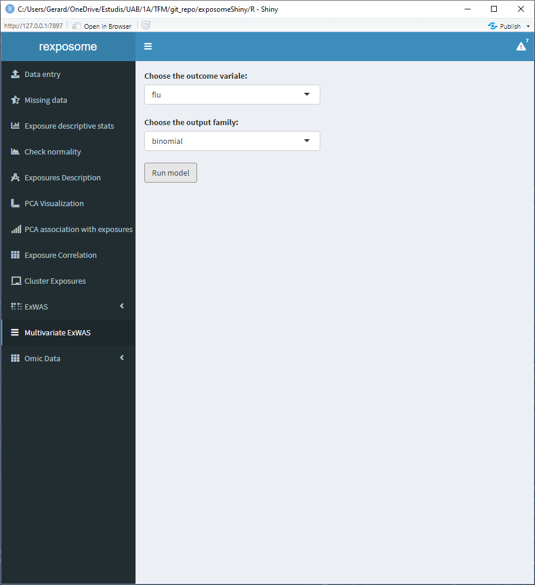

5.2 Exposome-Omic analysis
It’s important noting that the maximum size of the omics data is 30 MB, if the omics file to be analyzed is bigger, change the line number 2 of the server.R file.
5.2.1 Association analysis

Do first the proceeding of exposome data load and corresponding treatment if desired, then proceed to load the omic dataset on the “Data Entry” subtab of the “Omic Data” tab. The omic data should be provided as a *.RData file.

The exposome dataset can be subseted by families, on the “Exposome subsetting” subtab select the families that are desired to be included in this new set to study, if all the families are desired just don’t input any and proceed to click the “Subset and add”, which will trigger the action to combine the subsetted (or not) exposome dataset with the provided omic dataset.
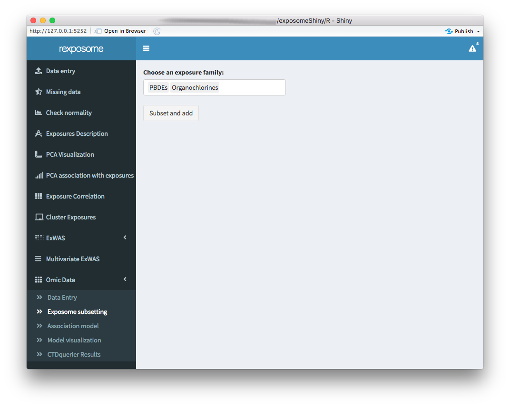
Select the variables for the association analysis and if SVA is wanted on the “Association model” subtab.
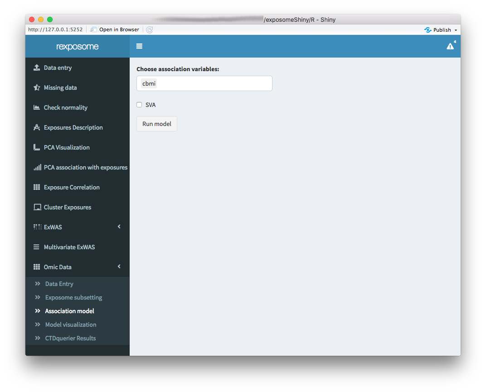
There are tabs to visualize the results of running the association model, all of the are on the “Model visualization” subtab. The “Results table” shows the gene, log of the fold change, p-value and adjusted p-value.

The “Significant hits” shows the exposure, hits and lambda.
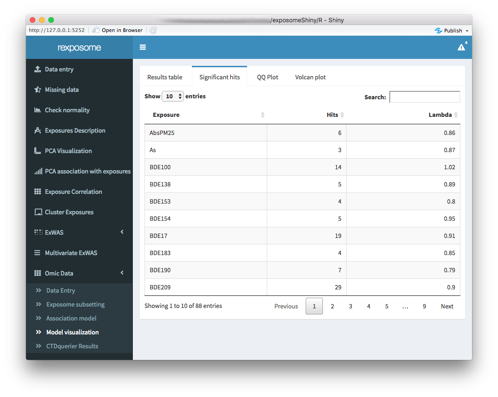
The QQ Plot shows a QQ plot (expected vs. observed -lo10(p-value)) for the selected exposure.

The Volcan plot shows a volcan plot (log2(fold change) vs -log10(p-value)). For this plot there are two input cells to adjust the horizontal and verital limit lines to filter out the results.
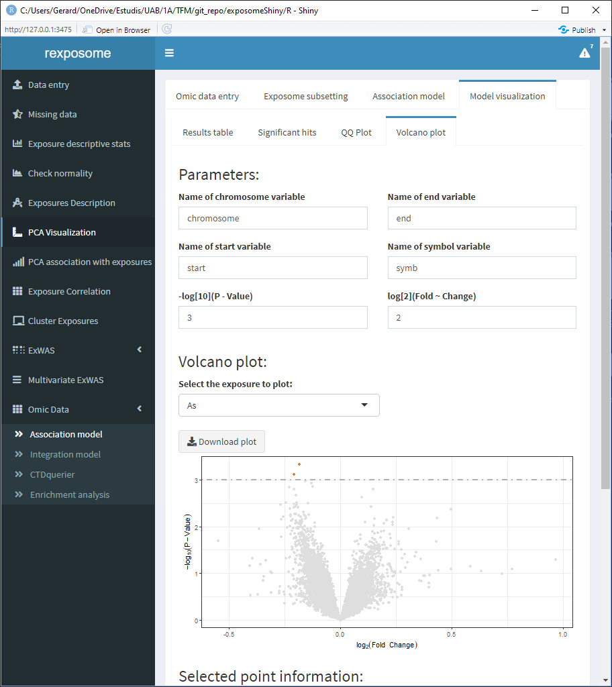
5.2.2 CTD querier

To perform a CTD querier study of the exposome-omic analysis, as before, load both datasets and run the desired model with them, check the Volcan plot and click on the desired point on the Volcan plot, the information of the selected plot will appear on the table below the plot (sometimes there are many points close so more than one rows can appear on the table), select from the table the desired point to add to the query and click “Add to querier”. It’s important noting that when trying to add to the querier the Shiny will find on the fields of the omic dataset that the user specifies on top of the plot. If the search does not return any symbol a prompt will appear, however if it’s found it will be added to the lower table corresponding to the genes to query.
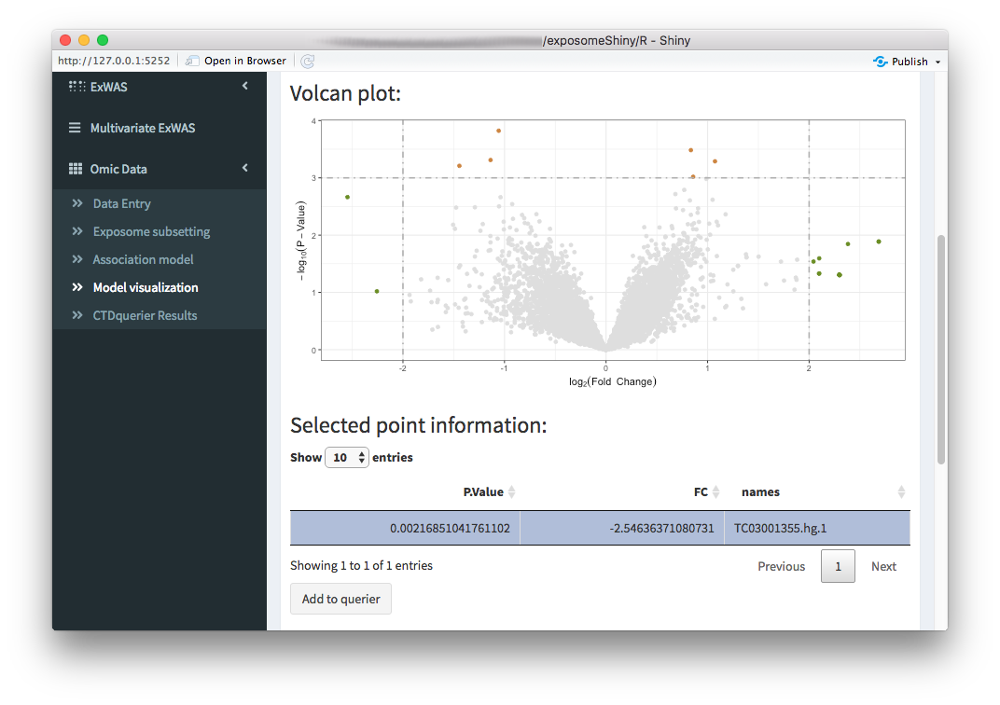
If by mistake some gene (or genes) were introduced to the querier, select them by clicking on the table row and click “Remove from querier”. Click on “Query selected genes on the CTD gene database” to perform the query of all the symbols of the querier list.
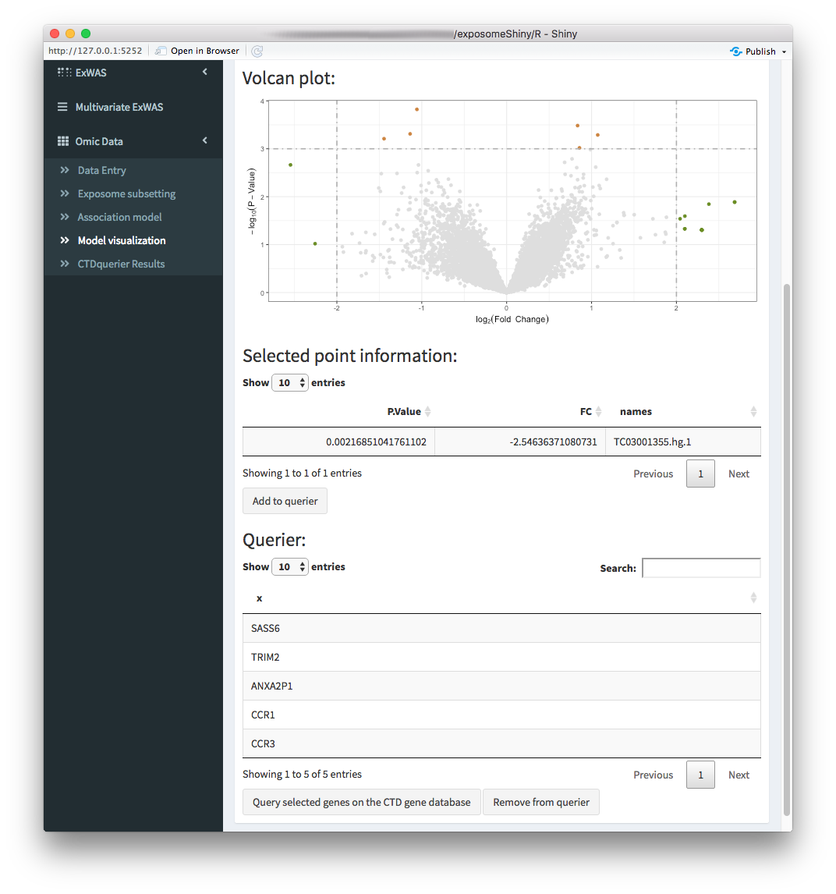
To visualize the results of the query, go to the “CTDquerier results” subtab. There are six tabs showing different results interpretations. First there’s the “Lost & found” tab which a plot to see the amount of genes found on the CTD database and the ones that were not found them, ther’s also two lists stating the names of them.
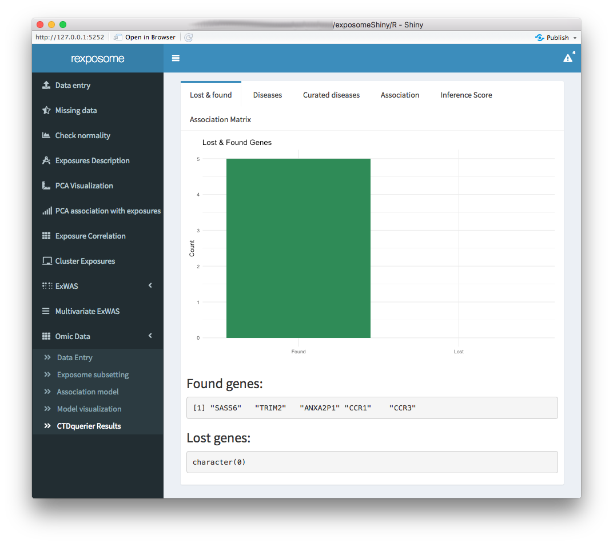
The diseases tab shows a table of all the associated diseases found on the CTD database.
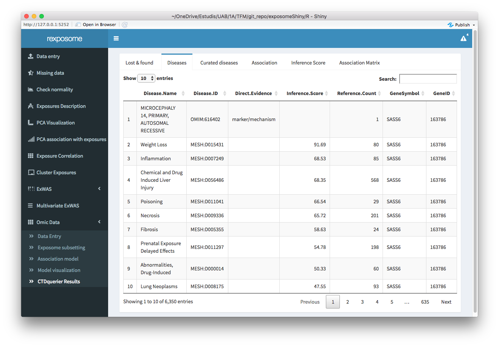
The curated diseases tab shows the table of associated diseases but only shows the ones with direct evidence.

The association tab shows information about all the direct evidence associated diseases. Select the disease of interest to see the score and reference count of it.
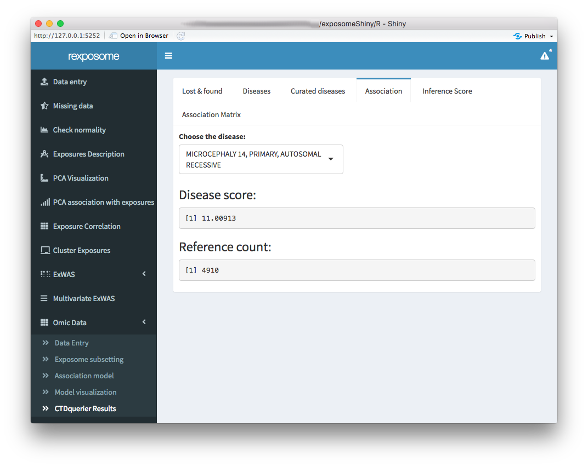
The inference score tab shows the inference score for each gene for a selected disease, the filter parameters puts out the genes with an inference score lower than the selected filter.

The association matrix tab shows a matrix of genes vs. chemicals with a heatmap representing the existing papers (references) providing evidence about the association between chemicals and genes.
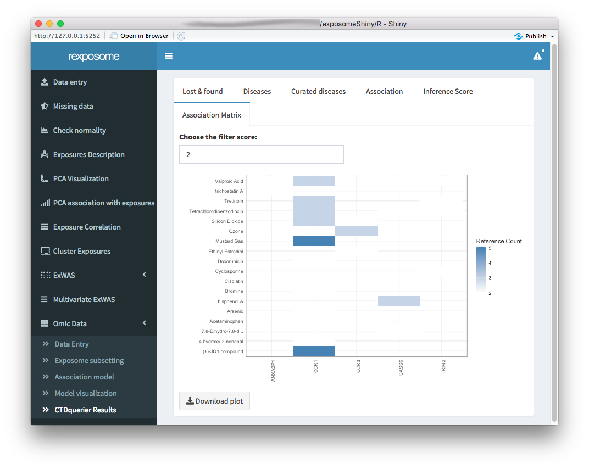